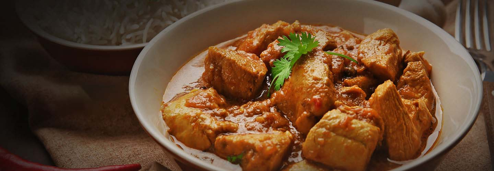
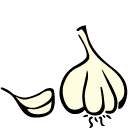
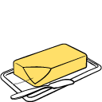
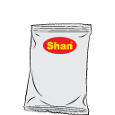

RECIPE
Go To Bottom Section
KARAHI

PRODUCT DESCRIPTION
Shan Karahi Mix helps you prepare delicious and mouthwatering traditional Karahi for a perfect mealtime experience.
INGREDIENTS
Cooking Recipe As Per 50 GRAM
Ingredients Required
- Meat 1/2 Kg
- Tomato
6-7 medium / 500g diced

-
Garlic Crushed
2-table spoon

-
Ginger Paste
1-table spoon
-
Green Chillies
6 medium whole
-
Fresh Coriander
Fresh Coriander Choped
-
Oil 11/2Cups/275m
-
Butter 1/2 Cup/85g

-
SHAN KARAHI
1 Packet Mix in 1/2 Cup Water

STEPS FOR COOKING
-
Mix garlic, ginger paste and Shan Karahi Mix. Apply to meat and marinate for (Chicken 15 minutes, Goat/ Lamb/ Beef 1-2 hours +).
-
Heat one cup oil and stir fry meat on high heat for 5-6 minutes. Add julienne ginger. Cover and cook on low heat until meat is tender (Chicken 10 minutes, Goat / Lamb / Beef 45 minutes).
-
Separately heat ½ cup oil and add tomatoes. Cook on low heat until soft (5-6 minutes). Stir periodically.
-
Add cooked tomatoes and green chillies to the cooked meat. On medium heat stir-fry meat until oil separates from masala. Stir constantly. If desired remove excessive oil. Add fresh coriander and butter. Stir fry and serve with hot naans
Go To Top Section
Bottom Section